# install packages (if need be)
#%pip install palmerpenguinsSML 301
Session 9: The Kernel Trick
Learning Rates
AUROC
Game: Tanks!
Support Vector Machines
- linear kernel
- polynomial kernel
- radial basis functions
#import needed libraries
import random
import numpy as np
import pandas as pd
import matplotlib.pyplot as plt
import sklearn.model_selection as skm
from matplotlib.pyplot import figure, plot, grid, title, xlabel, ylabel, legend
from palmerpenguins import load_penguins
from sklearn import svm
from sklearn.datasets import make_classification
from sklearn.linear_model import LogisticRegression
from sklearn.svm import SVC
from sklearn.metrics import accuracy_score, confusion_matrix, roc_auc_score, roc_curve, RocCurveDisplay
from sklearn.model_selection import GridSearchCV, train_test_split
from scipy.integrate import solve_ivp
from scipy.optimize import fsolve
# load data
penguins = load_penguins()
penguins['gentoo_bool'] = np.where(penguins['species'] == 'Gentoo', 1, 0)
# https://stackoverflow.com/questions/28716241/controlling-the-threshold-in-logistic-regression-in-scikit-learn
def custom_predict(X, threshold):
probs = model.predict_proba(X)
return (probs[:, 1] > threshold).astype(int)C:\Users\freex\AppData\Local\Programs\Python\Python313\Lib\site-packages\palmerpenguins\penguins.py:2: UserWarning: pkg_resources is deprecated as an API. See https://setuptools.pypa.io/en/latest/pkg_resources.html. The pkg_resources package is slated for removal as early as 2025-11-30. Refrain from using this package or pin to Setuptools<81.
import pkg_resourcesEuler’s Method
to solve a boundary value problem \[\frac{du}{dt} = f(t, u(t), \quad a \leq t \leq b, \quad u(a) = u_{0}\]
- adapted from demo by Brenton le Mesurier
- https://lemesurierb.people.charleston.edu/introduction-to-numerical-methods-and-analysis-python/main/ODE-IVP-1-basics-and-Euler-python.html
def eulerMethod(f, a, b, u_0, n):
"""Solve du/dt = f(t, u) for t in [a, b], with initial value u(a) = u_0"""
h = (b-a)/n
t = np.linspace(a, b, n+1) # Note: "n" counts steps, so there are n+1 values for t.
u = np.empty_like(t)
u[0] = u_0
for i in range(n):
u[i+1] = u[i] + f(t[i], u[i])*h
return (t, u)Example
\[\frac{du}{dt} = -\sin(u), \quad 0 \leq t \leq 3, \quad u(0) = 3\]
# right hand side
def f1(t, u):
"""For integration of -sin(x)
The general solution is
u(t) = cos(x) + C,
C = u_0 - cos(a)
"""
return -np.sin(t)
# true solution
def u1(t, a, u_0):
return np.cos(t) + (u_0 - np.cos(a));a = 0.
b = 3/4*np.pi
u_0 = 3.
n = 20
(t, U) = eulerMethod(f1, a, b, u_0, n)
u = u1(t, a, u_0)
figure(figsize=[12,8])
title(f"The exact solution is y = cos(x) + {u_0 - np.cos(a)}")
plot(t, u, "g", label="Exact solution")
plot(t, U, ".:b", label=f"Euler's answer for h={(b-a)/n:0.4g}")
legend()
grid(True);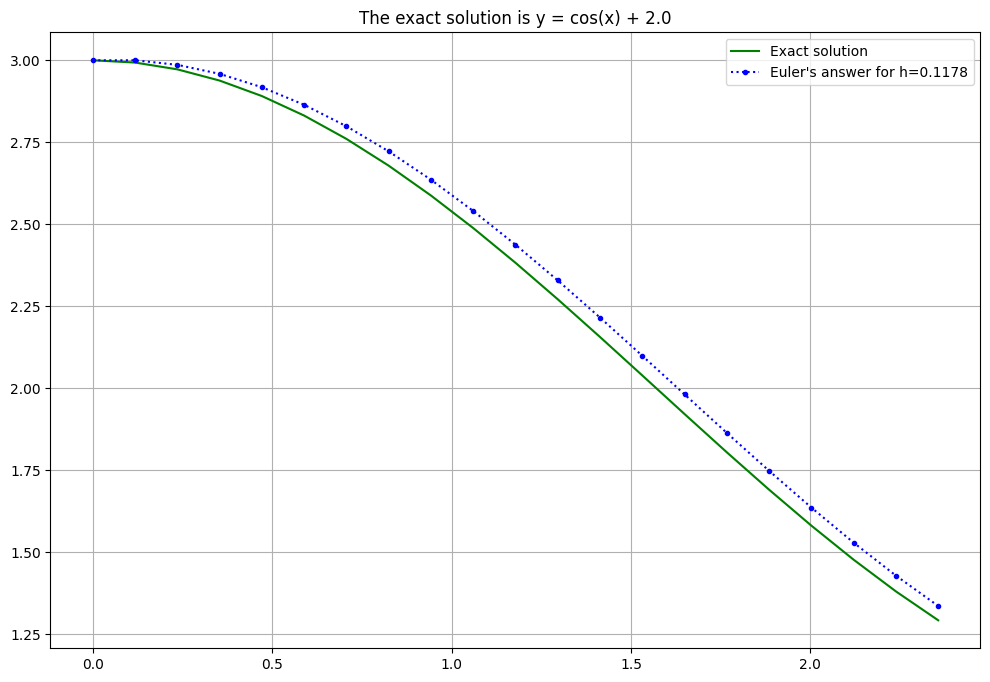
a = 0.
b = 3/4*np.pi
u_0 = 3.
n = 20
# vector field code: https://andrewcharlesjones.github.io/journal/differential-equation-viz.html
mesh_width = 0.25
dir_field_x_template = np.linspace(-mesh_width / 2, mesh_width / 2, 100)
xlims = [a, b]
ylims = [1, 4]
def dydx(x, y):
return -np.sin(x)
(t, U) = eulerMethod(f1, a, b, u_0, n)
u = u1(t, a, u_0)
plt.figure(figsize=(7, 6))
plt.xlim(xlims)
plt.ylim(ylims)
plt.axvline(0, c="black")
plt.axhline(0, c="black")
for x in np.arange(xlims[0], xlims[1], mesh_width):
for y in np.arange(ylims[0], ylims[1], mesh_width):
curr_slope = dydx(x, y)
curr_intercept = y - curr_slope * x
dir_field_xs = dir_field_x_template + x
dir_field_ys = [curr_slope * dfx + curr_intercept for dfx in dir_field_xs]
plt.plot(dir_field_xs, dir_field_ys, color="red")
plt.xlabel("x")
plt.ylabel("y")
plt.title("dy/dx")
#figure(figsize=[12,8])
title(f"The exact solution is y = cos(x) + {u_0 - np.cos(a)}")
#plot(t, u, "g", label="Exact solution")
plot(t, U, ".:b", label=f"Euler's answer for h={(b-a)/n:0.4g}")
legend()
grid(True);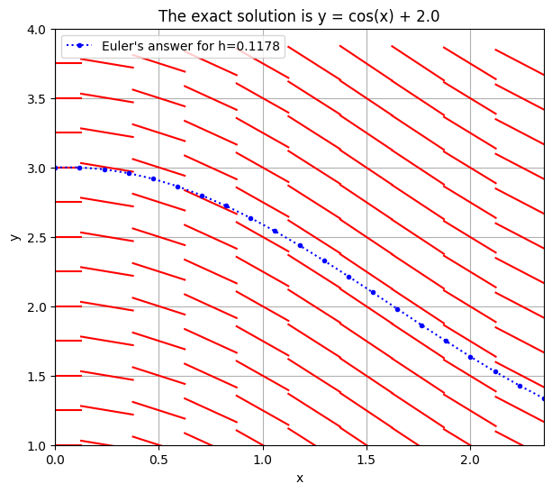
Example
\[\frac{du}{dt} = 3.01u, \quad 0 \leq t \leq 2, \quad u(0) = 0.42\]
- tip: try out different values for \(n\) (number of steps)
def f2(t, u):
"""For solving du/dt = k u.
The variable k may be defined later, so long as that is done before this function is used.
"""
return k*u
def u2(t, a, u_0, k):
return u_0 * np.exp(k*(t-a));
k = 3.01
u_0 = 0.42
a = 0.
b = 2.
n = 30 #number of steps
(t, U) = eulerMethod(f2, a, b, u_0, n)
u = u2(t, a, u_0, k)
figure(figsize=[12,8])
title(f"The exact solution is $u = {u_0} \, \exp({k} \, t)$")
plot(t, u, "g", label="Exact solution")
plot(t, U, ".:b", label=f"Euler's answer for h={(b-a)/n:0.4g}")
legend()
grid(True);<positron-console-cell-7>:20: SyntaxWarning: invalid escape sequence '\,'
<positron-console-cell-7>:20: SyntaxWarning: invalid escape sequence '\,'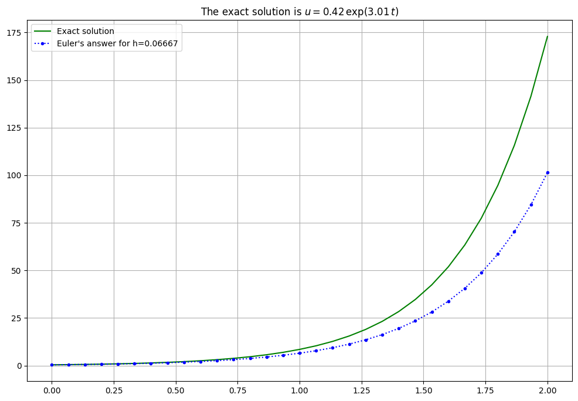
Shooting Methods
\[\frac{d^{2}y}{dt^{2}} = -g\]
\[y(0) = 0, \quad y(5) = 42\]
\[y'(0) = ?\]
- We are trying to estimate the initial muzzle velocity \(y'(0)\)
- gravity: \(g = 9.8\)
- adapted from textbook: https://pythonnumericalmethods.studentorg.berkeley.edu/notebooks/Index.html
F = lambda t, s: \
np.dot(np.array([[0,1],[0,-9.8/s[1]]]),s)
t_span = np.linspace(0, 5, 100)
y0 = 0 #left initial conditionActivity: Fire!
Try out different values of \(v_{0}\) to try to hit the red dot target
v0 = 25 #try out different valiues for initial muzzle velocity
t_eval = np.linspace(0, 5, 10)
sol = solve_ivp(F, [0, 5], \
[y0, v0], t_eval = t_eval)
plt.figure(figsize = (10, 8))
plt.plot(sol.t, sol.y[0])
plt.plot(5, 42, 'ro') #right initial condition
plt.xlabel('time (s)')
plt.ylabel('altitude (m)')
plt.title(f'first guess v={v0} m/s')
plt.show()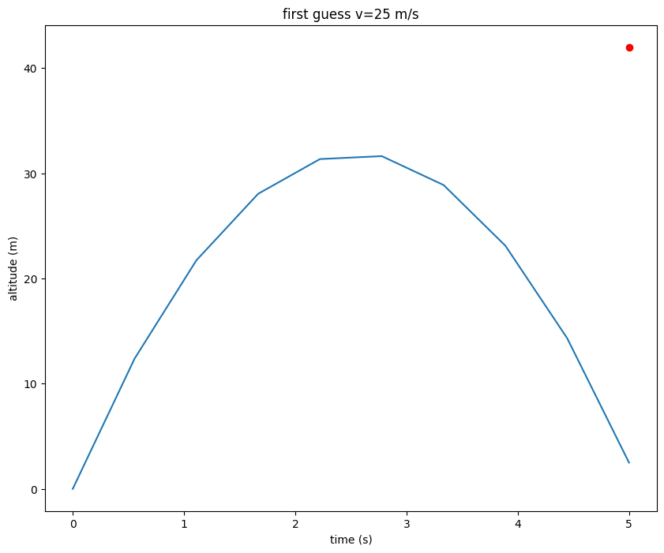
AUROC
Area under the ROC (radio operator characteristic) curve
- FPR: false positive rate = \(\frac{FP}{FP + TN}\), aka type I errors
- TPR: true positive rate = \(\frac{TP}{TP + FN}\), aka power
https://en.wikipedia.org/wiki/Sensitivity_and_specificity
df = penguins[['gentoo_bool', 'body_mass_g']] #load in needed columns
df = df.dropna() #then remove missing data
X = df[['body_mass_g']] #explanatory variables
y = df['gentoo_bool'] #target variable
X_train, X_test, y_train, y_test = train_test_split(X, y, test_size = 0.3, random_state = 301)
model = LogisticRegression().fit(X_train, y_train)
pred_proba_df = pd.DataFrame(model.predict_proba(X_test)) #data frame of probabilities (of being "negative" == 0 or "positive" == 1)Thresholds
By default, logistic regression makes classification decisions at 0.5 (on the vertical axis). However, the researcher might want to adjust the threshold level to restrict (or permit) misclassifications.
Default (threshold = 0.5)
y_pred = custom_predict(X=X_test, threshold=0.5)
confusion_mat = confusion_matrix(y_test, y_pred)
print(confusion_mat)
TP = confusion_mat[1,1]
FN = confusion_mat[1,0]
FP = confusion_mat[0,1]
TN = confusion_mat[0,0]
fpr = FP / (FP + TN)
tpr = TP / (TP + FN)
print(f'FPR: {fpr:.4f}')
print(f'TPR: {tpr:.4f}')[[63 4]
[ 8 28]]
FPR: 0.0597
TPR: 0.7778log_curve_x = np.linspace(X_test.min(), X_test.max(), 301).reshape(-1,1)
log_curve_y = model.predict_proba(log_curve_x)[:,1]
beta_0 = model.intercept_[0]
beta_1 = model.coef_[0][0]
cutoff_x = -beta_0 / beta_1
cutoff_y = 0.5
fig, (ax1, ax2) = plt.subplots(1, 2, figsize=(16, 8))
ax1.scatter(X_test['body_mass_g'], y_test)
ax1.plot(log_curve_x, log_curve_y, color = "red")
ax1.axhline(y = cutoff_y, color = "black", linestyle = "--")
ax1.axvline(x = cutoff_x, color = "black", linestyle = "--")
ax1.set_title("test data")
ax1.set_xlabel("body mass (g)")
ax1.set_ylabel("logit")
ax2.plot([0,1], [0,1], linestyle = "--", color = "black")
ax2.scatter(fpr, tpr, color = "orange", marker = "X")
ax2.set_title("toward ROC")
ax2.set_xlabel("false positive rate")
ax2.set_ylabel("true positive rate")
ax2.set_xlim(0,1)
ax2.set_ylim(0,1)
plt.show()C:\Users\freex\AppData\Local\Programs\Python\Python313\Lib\site-packages\sklearn\utils\validation.py:2749: UserWarning: X does not have valid feature names, but LogisticRegression was fitted with feature names
warnings.warn(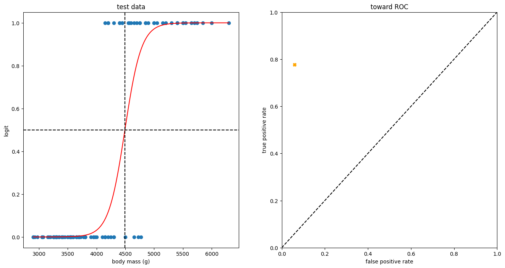
lower threshold, fewer false negatives
y_pred = custom_predict(X=X_test, threshold=0.2)
confusion_mat = confusion_matrix(y_test, y_pred)
print(confusion_mat)
TP = confusion_mat[1,1]
FN = confusion_mat[1,0]
FP = confusion_mat[0,1]
TN = confusion_mat[0,0]
fpr = FP / (FP + TN)
tpr = TP / (TP + FN)
print(f'FPR: {fpr:.4f}')
print(f'TPR: {tpr:.4f}')[[61 6]
[ 3 33]]
FPR: 0.0896
TPR: 0.9167log_curve_x = np.linspace(X_test.min(), X_test.max(), 301).reshape(-1,1)
log_curve_y = model.predict_proba(log_curve_x)[:,1]
beta_0 = model.intercept_[0]
beta_1 = model.coef_[0][0]
cutoff_x = 4300 #TODO: not hard-code this
cutoff_y = 0.2
fig, (ax1, ax2) = plt.subplots(1, 2, figsize=(16, 8))
ax1.scatter(X_test['body_mass_g'], y_test)
ax1.plot(log_curve_x, log_curve_y, color = "red")
ax1.axhline(y = cutoff_y, color = "black", linestyle = "--")
ax1.axvline(x = cutoff_x, color = "black", linestyle = "--")
ax1.set_title("test data")
ax1.set_xlabel("body mass (g)")
ax1.set_ylabel("logit")
ax2.plot([0,1], [0,1], linestyle = "--", color = "black")
ax2.scatter(fpr, tpr, color = "orange", marker = "X")
ax2.set_title("toward ROC")
ax2.set_xlabel("false positive rate")
ax2.set_ylabel("true positive rate")
ax2.set_xlim(0,1)
ax2.set_ylim(0,1)
plt.show()C:\Users\freex\AppData\Local\Programs\Python\Python313\Lib\site-packages\sklearn\utils\validation.py:2749: UserWarning: X does not have valid feature names, but LogisticRegression was fitted with feature names
warnings.warn(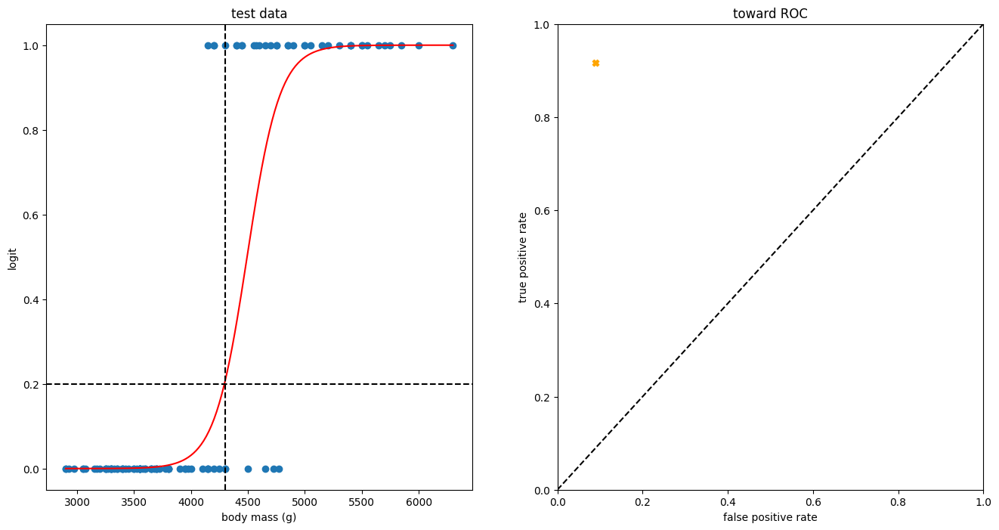
higher threshold, fewer false positives
y_pred = custom_predict(X=X_test, threshold=0.8)
confusion_mat = confusion_matrix(y_test, y_pred)
print(confusion_mat)
TP = confusion_mat[1,1]
FN = confusion_mat[1,0]
FP = confusion_mat[0,1]
TN = confusion_mat[0,0]
fpr = FP / (FP + TN)
tpr = TP / (TP + FN)
print(f'FPR: {fpr:.4f}')
print(f'TPR: {tpr:.4f}')[[65 2]
[12 24]]
FPR: 0.0299
TPR: 0.6667log_curve_x = np.linspace(X_test.min(), X_test.max(), 301).reshape(-1,1)
log_curve_y = model.predict_proba(log_curve_x)[:,1]
beta_0 = model.intercept_[0]
beta_1 = model.coef_[0][0]
cutoff_x = 4700 #TODO: not hard-code this
cutoff_y = 0.8
fig, (ax1, ax2) = plt.subplots(1, 2, figsize=(16, 8))
ax1.scatter(X_test['body_mass_g'], y_test)
ax1.plot(log_curve_x, log_curve_y, color = "red")
ax1.axhline(y = cutoff_y, color = "black", linestyle = "--")
ax1.axvline(x = cutoff_x, color = "black", linestyle = "--")
ax1.set_title("test data")
ax1.set_xlabel("body mass (g)")
ax1.set_ylabel("logit")
ax2.plot([0,1], [0,1], linestyle = "--", color = "black")
ax2.scatter(fpr, tpr, color = "orange", marker = "X")
ax2.set_title("toward ROC")
ax2.set_xlabel("false positive rate")
ax2.set_ylabel("true positive rate")
ax2.set_xlim(0,1)
ax2.set_ylim(0,1)
plt.show()C:\Users\freex\AppData\Local\Programs\Python\Python313\Lib\site-packages\sklearn\utils\validation.py:2749: UserWarning: X does not have valid feature names, but LogisticRegression was fitted with feature names
warnings.warn(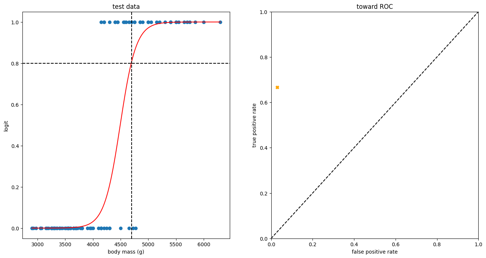
ROC
logit_roc_auc = roc_auc_score(y_test, model.predict(X_test))
fpr, tpr, thresholds = roc_curve(y_test, model.predict_proba(X_test)[:,1])
plt.figure()
plt.plot(fpr, tpr, color = "orange", label='Logistic Regression (area = %0.2f)' % logit_roc_auc)
plt.plot([0, 1], [0, 1],'r--')
plt.xlim([0.0, 1.0])
plt.ylim([0.0, 1.05])
plt.xlabel('False Positive Rate')
plt.ylabel('True Positive Rate')
plt.title('Receiver operating characteristic')
plt.legend(loc="lower right")
#plt.savefig('Log_ROC')
plt.show()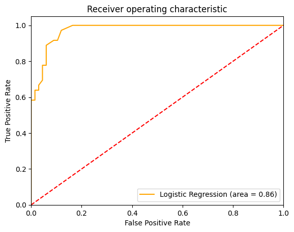
TODO: show AUROC gets better (i.e. closer to 1.0) with more input variables
# fig, ax1 = plt.subplots(1, 1, figsize=(8, 8))
# roc_curve_1_var = RocCurveDisplay.from_estimator(model, X_test, y_test, ax = ax1, name = "one variable")
# plt.show()Support Vector Machines
demo code by Carolina Bento
https://medium.com/towards-data-science/support-vector-machines-explained-with-python-examples-cb65e8172c85
adapted by Derek Sollberger for SML 301
def generate_random_dataset(size):
""" Generate a random dataset and that follows a quadratic distribution
"""
x = []
y = []
target = []
random.seed(301) #obvious SML 301 adaptation
for i in range(size):
# class zero
x.append(np.round(random.uniform(0, 2.5), 1))
y.append(np.round(random.uniform(0, 20), 1))
target.append(0) # class one
x.append(np.round(random.uniform(1, 5), 2))
y.append(np.round(random.uniform(20, 25), 2))
target.append(1)
x.append(np.round(random.uniform(3, 5), 2))
y.append(np.round(random.uniform(5, 25), 2))
target.append(1)
df_x = pd.DataFrame(data=x)
df_y = pd.DataFrame(data=y)
df_target = pd.DataFrame(data=target)
data_frame = pd.concat([df_x, df_y], ignore_index=True, axis=1)
data_frame = pd.concat([data_frame, df_target], ignore_index=True, axis=1)
data_frame.columns = ['x', 'y', 'target']
return data_frame
# Generate dataset
size = 100
dataset = generate_random_dataset(size)
features = dataset[['x', 'y']]
label = dataset['target']
# Hold out 20% of the dataset for training
test_size = int(np.round(size * 0.2, 0))
# Split dataset into training and testing sets
x_train = features[:-test_size].values
y_train = label[:-test_size].values
x_test = features[-test_size:].values
y_test = label[-test_size:].values
# Plotting the training set
fig, ax = plt.subplots(figsize=(12, 7))# removing to and right border
ax.spines['top'].set_visible(False)
ax.spines['left'].set_visible(False)
ax.spines['right'].set_visible(False)# adding major gridlines
ax.grid(color='grey', linestyle='-', linewidth=0.25, alpha=0.5)
ax.scatter(features[:-test_size]['x'], features[:-test_size]['y'], color="#8C7298")
plt.show()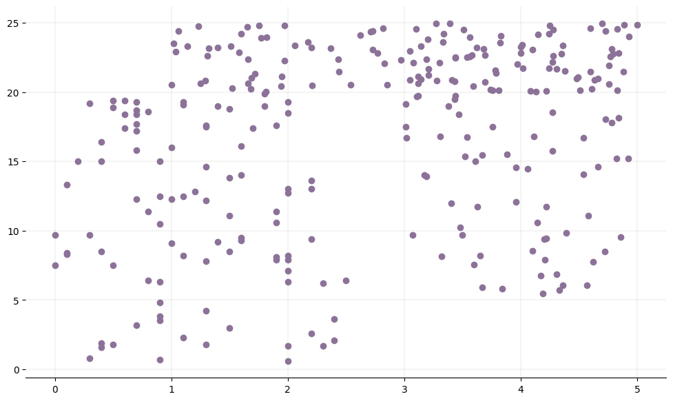
Linear Kernel
model = svm.SVC(kernel='linear')
model.fit(x_train, y_train)SVC(kernel='linear')In a Jupyter environment, please rerun this cell to show the HTML representation or trust the notebook.
On GitHub, the HTML representation is unable to render, please try loading this page with nbviewer.org.
Parameters
| C | 1.0 | |
| kernel | 'linear' | |
| degree | 3 | |
| gamma | 'scale' | |
| coef0 | 0.0 | |
| shrinking | True | |
| probability | False | |
| tol | 0.001 | |
| cache_size | 200 | |
| class_weight | None | |
| verbose | False | |
| max_iter | -1 | |
| decision_function_shape | 'ovr' | |
| break_ties | False | |
| random_state | None |
fig, ax = plt.subplots(figsize=(12, 7))
# Removing to and right border
ax.spines['top'].set_visible(False)
ax.spines['left'].set_visible(False)
ax.spines['right'].set_visible(False)
# Create grid to evaluate model
xx = np.linspace(-1, max(features['x']) + 1, len(x_train))
yy = np.linspace(0, max(features['y']) + 1, len(y_train))
YY, XX = np.meshgrid(yy, xx)
xy = np.vstack([XX.ravel(), YY.ravel()]).T
train_size = len(features[:-test_size]['x'])
# Assigning different colors to the classes
colors = y_train
colors = np.where(colors == 1, '#8C7298', '#4786D1')
# Plot the dataset
ax.scatter(features[:-test_size]['x'], features[:-test_size]['y'], c=colors)
# Get the separating hyperplane
Z = model.decision_function(xy).reshape(XX.shape)
# Draw the decision boundary and margins
ax.contour(XX, YY, Z, colors='k', levels=[-1, 0, 1], alpha=0.5, linestyles=['--', '-', '--'])
# Highlight support vectors with a circle around them
ax.scatter(model.support_vectors_[:, 0], model.support_vectors_[:, 1], s=100, linewidth=1, facecolors='none', edgecolors='k')
plt.show()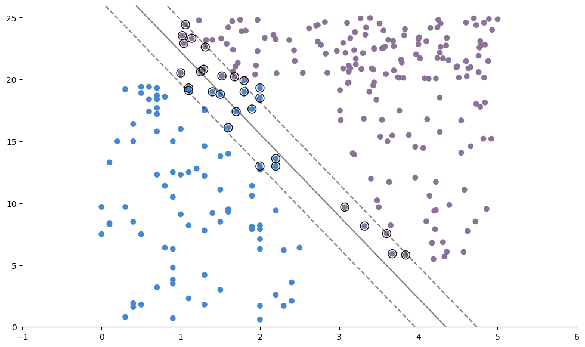
model_predictions = model.predict(x_test)
model_accuracy = accuracy_score(y_test, model_predictions)
print("Accuracy (normalized): " + str(model_accuracy))Accuracy (normalized): 0.95Polynomial Kernel
Degree 2
- notice the
degreeparameter
model = svm.SVC(kernel = 'poly', degree = 2)
model.fit(x_train, y_train)SVC(degree=2, kernel='poly')In a Jupyter environment, please rerun this cell to show the HTML representation or trust the notebook.
On GitHub, the HTML representation is unable to render, please try loading this page with nbviewer.org.
Parameters
| C | 1.0 | |
| kernel | 'poly' | |
| degree | 2 | |
| gamma | 'scale' | |
| coef0 | 0.0 | |
| shrinking | True | |
| probability | False | |
| tol | 0.001 | |
| cache_size | 200 | |
| class_weight | None | |
| verbose | False | |
| max_iter | -1 | |
| decision_function_shape | 'ovr' | |
| break_ties | False | |
| random_state | None |
fig, ax = plt.subplots(figsize=(12, 7))
# Removing to and right border
ax.spines['top'].set_visible(False)
ax.spines['left'].set_visible(False)
ax.spines['right'].set_visible(False)
# Create grid to evaluate model
xx = np.linspace(-1, max(features['x']) + 1, len(x_train))
yy = np.linspace(0, max(features['y']) + 1, len(y_train))
YY, XX = np.meshgrid(yy, xx)
xy = np.vstack([XX.ravel(), YY.ravel()]).T
train_size = len(features[:-test_size]['x'])
# Assigning different colors to the classes
colors = y_train
colors = np.where(colors == 1, '#8C7298', '#4786D1')
# Plot the dataset
ax.scatter(features[:-test_size]['x'], features[:-test_size]['y'], c=colors)
# Get the separating hyperplane
Z = model.decision_function(xy).reshape(XX.shape)
# Draw the decision boundary and margins
ax.contour(XX, YY, Z, colors='k', levels=[-1, 0, 1], alpha=0.5, linestyles=['--', '-', '--'])
# Highlight support vectors with a circle around them
ax.scatter(model.support_vectors_[:, 0], model.support_vectors_[:, 1], s=100, linewidth=1, facecolors='none', edgecolors='k')
plt.show()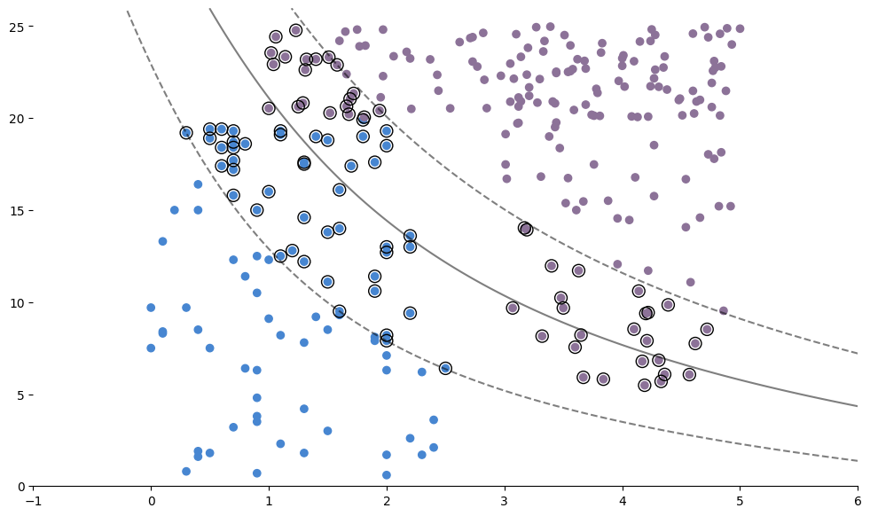
model_predictions = model.predict(x_test)
model_accuracy = accuracy_score(y_test, model_predictions)
print("Accuracy (normalized): " + str(model_accuracy))Accuracy (normalized): 0.7Degree 3
- also exploring the
costparameter \(C\)
model = svm.SVC(C = 0.5, kernel = 'poly', degree = 3)
model.fit(x_train, y_train)SVC(C=0.5, kernel='poly')In a Jupyter environment, please rerun this cell to show the HTML representation or trust the notebook.
On GitHub, the HTML representation is unable to render, please try loading this page with nbviewer.org.
Parameters
| C | 0.5 | |
| kernel | 'poly' | |
| degree | 3 | |
| gamma | 'scale' | |
| coef0 | 0.0 | |
| shrinking | True | |
| probability | False | |
| tol | 0.001 | |
| cache_size | 200 | |
| class_weight | None | |
| verbose | False | |
| max_iter | -1 | |
| decision_function_shape | 'ovr' | |
| break_ties | False | |
| random_state | None |
fig, ax = plt.subplots(figsize=(12, 7))
# Removing to and right border
ax.spines['top'].set_visible(False)
ax.spines['left'].set_visible(False)
ax.spines['right'].set_visible(False)
# Create grid to evaluate model
xx = np.linspace(-1, max(features['x']) + 1, len(x_train))
yy = np.linspace(0, max(features['y']) + 1, len(y_train))
YY, XX = np.meshgrid(yy, xx)
xy = np.vstack([XX.ravel(), YY.ravel()]).T
train_size = len(features[:-test_size]['x'])
# Assigning different colors to the classes
colors = y_train
colors = np.where(colors == 1, '#8C7298', '#4786D1')
# Plot the dataset
ax.scatter(features[:-test_size]['x'], features[:-test_size]['y'], c=colors)
# Get the separating hyperplane
Z = model.decision_function(xy).reshape(XX.shape)
# Draw the decision boundary and margins
ax.contour(XX, YY, Z, colors='k', levels=[-1, 0, 1], alpha=0.5, linestyles=['--', '-', '--'])
# Highlight support vectors with a circle around them
ax.scatter(model.support_vectors_[:, 0], model.support_vectors_[:, 1], s=100, linewidth=1, facecolors='none', edgecolors='k')
plt.show()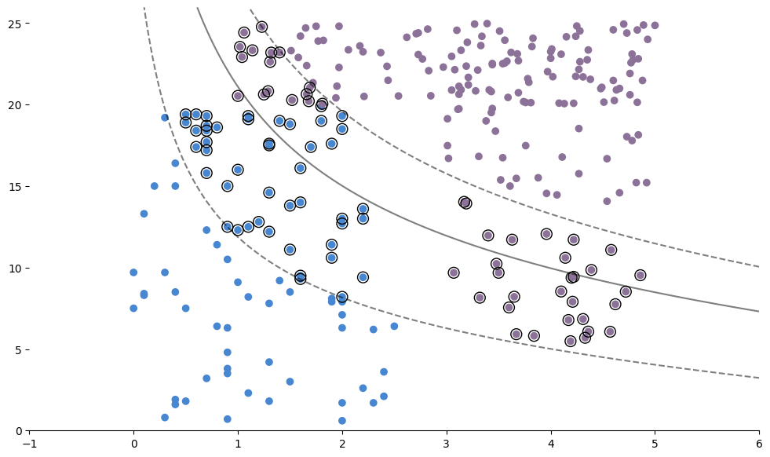
model_predictions = model.predict(x_test)
model_accuracy = accuracy_score(y_test, model_predictions)
print("Accuracy (normalized): " + str(model_accuracy))Accuracy (normalized): 0.7Cross Validation
grid = skm.GridSearchCV(estimator = svm.SVC(),
param_grid = {'C':[0.01, 0.1, 1.0, 10], 'kernel':['poly'], 'degree':[2,3,4]},
#param_grid = {'C':np.linspace(0.01, 10, 10), 'kernel':['poly'], 'degree':[2,3,4]},
cv = 5,
scoring='accuracy');
grid.fit(x_train , y_train)GridSearchCV(cv=5, estimator=SVC(),
param_grid={'C': [0.01, 0.1, 1.0, 10], 'degree': [2, 3, 4],
'kernel': ['poly']},
scoring='accuracy')In a Jupyter environment, please rerun this cell to show the HTML representation or trust the notebook. On GitHub, the HTML representation is unable to render, please try loading this page with nbviewer.org.
Parameters
| estimator | SVC() | |
| param_grid | {'C': [0.01, 0.1, ...], 'degree': [2, 3, ...], 'kernel': ['poly']} | |
| scoring | 'accuracy' | |
| n_jobs | None | |
| refit | True | |
| cv | 5 | |
| verbose | 0 | |
| pre_dispatch | '2*n_jobs' | |
| error_score | nan | |
| return_train_score | False |
SVC(C=10, degree=2, kernel='poly')
Parameters
| C | 10 | |
| kernel | 'poly' | |
| degree | 2 | |
| gamma | 'scale' | |
| coef0 | 0.0 | |
| shrinking | True | |
| probability | False | |
| tol | 0.001 | |
| cache_size | 200 | |
| class_weight | None | |
| verbose | False | |
| max_iter | -1 | |
| decision_function_shape | 'ovr' | |
| break_ties | False | |
| random_state | None |
# display best parameters from the gride search
print(grid.best_estimator_)SVC(C=10, degree=2, kernel='poly')model = svm.SVC(C = 10.0, kernel = 'poly', degree = 2)
model.fit(x_train, y_train)
model_predictions = model.predict(x_test)
model_accuracy = accuracy_score(y_test, model_predictions)
print("Accuracy (normalized): " + str(model_accuracy))Accuracy (normalized): 0.85Radial Basis Kernel
model = svm.SVC(C = 0.5, kernel = 'rbf', gamma = 0.301)
model.fit(x_train, y_train)SVC(C=0.5, gamma=0.301)In a Jupyter environment, please rerun this cell to show the HTML representation or trust the notebook.
On GitHub, the HTML representation is unable to render, please try loading this page with nbviewer.org.
Parameters
| C | 0.5 | |
| kernel | 'rbf' | |
| degree | 3 | |
| gamma | 0.301 | |
| coef0 | 0.0 | |
| shrinking | True | |
| probability | False | |
| tol | 0.001 | |
| cache_size | 200 | |
| class_weight | None | |
| verbose | False | |
| max_iter | -1 | |
| decision_function_shape | 'ovr' | |
| break_ties | False | |
| random_state | None |
fig, ax = plt.subplots(figsize=(12, 7))
# Removing to and right border
ax.spines['top'].set_visible(False)
ax.spines['left'].set_visible(False)
ax.spines['right'].set_visible(False)
# Create grid to evaluate model
xx = np.linspace(-1, max(features['x']) + 1, len(x_train))
yy = np.linspace(0, max(features['y']) + 1, len(y_train))
YY, XX = np.meshgrid(yy, xx)
xy = np.vstack([XX.ravel(), YY.ravel()]).T
train_size = len(features[:-test_size]['x'])
# Assigning different colors to the classes
colors = y_train
colors = np.where(colors == 1, '#8C7298', '#4786D1')
# Plot the dataset
ax.scatter(features[:-test_size]['x'], features[:-test_size]['y'], c=colors)
# Get the separating hyperplane
Z = model.decision_function(xy).reshape(XX.shape)
# Draw the decision boundary and margins
ax.contour(XX, YY, Z, colors='k', levels=[-1, 0, 1], alpha=0.5, linestyles=['--', '-', '--'])
# Highlight support vectors with a circle around them
ax.scatter(model.support_vectors_[:, 0], model.support_vectors_[:, 1], s=100, linewidth=1, facecolors='none', edgecolors='k')
plt.show()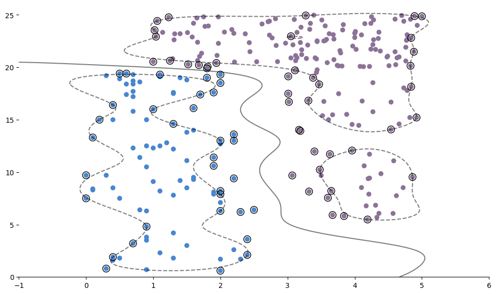
model_predictions = model.predict(x_test)
model_accuracy = accuracy_score(y_test, model_predictions)
print("Accuracy (normalized): " + str(model_accuracy))Accuracy (normalized): 1.0grid = skm.GridSearchCV(estimator = svm.SVC(),
param_grid = {'C':np.logspace(-2, 1, 10),
'gamma':np.logspace(-2, 1, 10),
'kernel':['rbf']},
cv = 4,
scoring='accuracy');
grid.fit(x_train , y_train)GridSearchCV(cv=4, estimator=SVC(),
param_grid={'C': array([ 0.01 , 0.02154435, 0.04641589, 0.1 , 0.21544347, 0.46415888, 1. , 2.15443469, 4.64158883, 10. ]),
'gamma': array([ 0.01 , 0.02154435, 0.04641589, 0.1 , 0.21544347, 0.46415888, 1. , 2.15443469, 4.64158883, 10. ]),
'kernel': ['rbf']},
scoring='accuracy')In a Jupyter environment, please rerun this cell to show the HTML representation or trust the notebook. On GitHub, the HTML representation is unable to render, please try loading this page with nbviewer.org.
Parameters
| estimator | SVC() | |
| param_grid | {'C': array([ 0.01 ... 10. ]), 'gamma': array([ 0.01 ... 10. ]), 'kernel': ['rbf']} | |
| scoring | 'accuracy' | |
| n_jobs | None | |
| refit | True | |
| cv | 4 | |
| verbose | 0 | |
| pre_dispatch | '2*n_jobs' | |
| error_score | nan | |
| return_train_score | False |
SVC(C=np.float64(0.21544346900318834), gamma=np.float64(0.46415888336127775))
Parameters
| C | np.float64(0....4346900318834) | |
| kernel | 'rbf' | |
| degree | 3 | |
| gamma | np.float64(0....5888336127775) | |
| coef0 | 0.0 | |
| shrinking | True | |
| probability | False | |
| tol | 0.001 | |
| cache_size | 200 | |
| class_weight | None | |
| verbose | False | |
| max_iter | -1 | |
| decision_function_shape | 'ovr' | |
| break_ties | False | |
| random_state | None |
# display best parameters from the gride search
print(grid.best_estimator_)SVC(C=np.float64(0.21544346900318834), gamma=np.float64(0.46415888336127775))model = svm.SVC(C = 0.21544346900318834, kernel = 'rbf', gamma = 0.46415888336127775)
model.fit(x_train, y_train)SVC(C=0.21544346900318834, gamma=0.46415888336127775)In a Jupyter environment, please rerun this cell to show the HTML representation or trust the notebook.
On GitHub, the HTML representation is unable to render, please try loading this page with nbviewer.org.
Parameters
| C | 0.21544346900318834 | |
| kernel | 'rbf' | |
| degree | 3 | |
| gamma | 0.46415888336127775 | |
| coef0 | 0.0 | |
| shrinking | True | |
| probability | False | |
| tol | 0.001 | |
| cache_size | 200 | |
| class_weight | None | |
| verbose | False | |
| max_iter | -1 | |
| decision_function_shape | 'ovr' | |
| break_ties | False | |
| random_state | None |
model_predictions = model.predict(x_test)
model_accuracy = accuracy_score(y_test, model_predictions)
print("Accuracy (normalized): " + str(model_accuracy))Accuracy (normalized): 1.0Bias-Variance Trade-Off
demo by Neri Van Otten
https://spotintelligence.com/2023/04/11/bias-variance-trade-off/
# Generate synthetic data
X, y = make_classification(n_samples=1000, n_features=10, n_informative=5, n_redundant=0, random_state=42)
# Split data into training and test sets
X_train, X_test, y_train, y_test = train_test_split(X, y, test_size=0.2, random_state=42)
# Define a range of values for the regularization parameter C to search over
param_grid = {'C': [0.01, 0.1, 1, 10, 100]}
# Create a grid search object to search over hyperparameters
grid_search = GridSearchCV(SVC(kernel='rbf'), param_grid, cv=5)
# Fit the grid search object to the training data
grid_search.fit(X_train, y_train)
# Print the best hyperparameters found by the grid search
print("Best hyperparameters:", grid_search.best_params_)
# Evaluate the model on the test data
svm = grid_search.best_estimator_
print("Test accuracy:", svm.score(X_test, y_test))Best hyperparameters: {'C': 10}
Test accuracy: 0.89Gradient Descent
- adapted from demo by Mirko Stojiljkovic
- https://realpython.com/gradient-descent-algorithm-python/
# idea (partial code)
# def gradient_descent(gradient, start, learn_rate, n_iter):
# vector = start
# for _ in range(n_iter):
# diff = -learn_rate * gradient(vector)
# vector += diff
# return vectorConverence
- need: termination condition(s)
- want: display iteration results
def gradient_descent(gradient, start, learn_rate, n_iter=50, tolerance=1e-06):
vector = start
for iter_num in range(n_iter):
diff = -learn_rate * gradient(vector)
if np.all(np.abs(diff) <= tolerance):
break
print("iteration: " + str(iter_num))
print("current guess: ", vector)
vector += diff
return vectorExample
We will find local minima for
\[f(x) = x^{4} - 5x^{2} - 3x\]
- observe: \(f'(x) = 4x^{3} - 10x - 3\)
- tip: try out different starting locations and different learning rates
f = lambda x: x**4 - 5*x**2 - 3*x
f_prime = lambda x: 4*x**3 - 10*x - 3
gradient_descent(f_prime, start = 0.301, learn_rate = 0.301)iteration: 0
current guess: 0.301
iteration: 1
current guess: 2.077175835196
iteration: 2
current guess: -1.558141743024473
iteration: 3
current guess: -0.7905784579777443
iteration: 4
current guess: -1.672295717010838
iteration: 5
current guess: -0.17216264696601957
iteration: 6
current guess: 0.21877167353158977
iteration: 7
current guess: 1.767667759167257
iteration: 8
current guess: 1.3412441409070421
iteration: 9
current guess: 3.376363161185013
iteration: 10
current guess: -31.89969552212498
iteration: 11
current guess: 38955.82392653197
iteration: 12
current guess: -71177653837903.53
iteration: 13
current guess: 4.34167682027791e+41--------------------------------------------------------------------------- OverflowError Traceback (most recent call last) Cell In[12], line 3 1 f = lambda x: x**4 - 5*x**2 - 3*x 2 f_prime = lambda x: 4*x**3 - 10*x - 3 ----> 3 gradient_descent(f_prime, start = 0.301, learn_rate = 0.301) Cell In[11], line 4, in gradient_descent(gradient, start, learn_rate, n_iter, tolerance) 2 vector = start 3 for iter_num in range(n_iter): ----> 4 diff = -learn_rate * gradient(vector) 5 if np.all(np.abs(diff) <= tolerance): 6 break Cell In[12], line 2, in <lambda>(x) 1 f = lambda x: x**4 - 5*x**2 - 3*x ----> 2 f_prime = lambda x: 4*x**3 - 10*x - 3 3 gradient_descent(f_prime, start = 0.301, learn_rate = 0.301) OverflowError: (34, 'Result too large')
Example
We will find local minima for
\[f(x,y) = x^{2} + y^{4}\]
- observe \(\nabla f = (2x, 4y^{3})\)
- tip: try out different starting locations and different learning rates
f_prime = lambda x: 2*x[0] + 4*x[1]**3
gradient_descent(f_prime, start = np.array([0.301, 0.301]), learn_rate = 0.301)iteration: 0
current guess: [0.301 0.301]
iteration: 1
current guess: [0.08696384 0.08696384]
iteration: 2
current guess: [0.03381976 0.03381976]
iteration: 3
current guess: [0.01341369 0.01341369]
iteration: 4
current guess: [0.00533574 0.00533574]
iteration: 5
current guess: [0.00212344 0.00212344]
iteration: 6
current guess: [0.00084512 0.00084512]
iteration: 7
current guess: [0.00033636 0.00033636]
iteration: 8
current guess: [0.00013387 0.00013387]
iteration: 9
current guess: [5.32801947e-05 5.32801947e-05]
iteration: 10
current guess: [2.12055173e-05 2.12055173e-05]
iteration: 11
current guess: [8.43979589e-06 8.43979589e-06]
iteration: 12
current guess: [3.35903876e-06 3.35903876e-06]array([1.33689743e-06, 1.33689743e-06])Example: Linear Regression
Synthetic data from \(y = 301x + 42 + N(0,1)\)
x = np.linspace(1, 100, 100)
y = 301*x + 42 + np.random.normal(0, 1, size = 100)
def gradient_descent_OLS(
gradient, x, y, start, learn_rate=0.1, n_iter=50, tolerance=1e-06
):
vector = start
for _ in range(n_iter):
diff = -learn_rate * np.array(gradient(x, y, vector))
if np.all(np.abs(diff) <= tolerance):
break
vector += diff
return vector
def ssr_gradient(x, y, b):
res = b[0] + b[1] * x - y
return res.mean(), (res * x).mean() # .mean() is a method of np.ndarraygradient_descent_OLS(ssr_gradient, x, y,
start = [0.301, 0.301],
learn_rate = 0.0005,
n_iter = 100000)array([ 41.79000319, 301.00126296])Stochastic Gradient Descent
- calculations in batches
def sgd(
gradient, x, y, n_vars=None, start=None, learn_rate=0.1,
decay_rate=0.0, batch_size=1, n_iter=50, tolerance=1e-06,
dtype="float64", random_state=None
):
# Checking if the gradient is callable
if not callable(gradient):
raise TypeError("'gradient' must be callable")
# Setting up the data type for NumPy arrays
dtype_ = np.dtype(dtype)
# Converting x and y to NumPy arrays
x, y = np.array(x, dtype=dtype_), np.array(y, dtype=dtype_)
n_obs = x.shape[0]
if n_obs != y.shape[0]:
raise ValueError("'x' and 'y' lengths do not match")
xy = np.c_[x.reshape(n_obs, -1), y.reshape(n_obs, 1)]
# Initializing the random number generator
seed = None if random_state is None else int(random_state)
rng = np.random.default_rng(seed=seed)
# RANDOM INITIALIZATION
vector = (
rng.normal(size=int(n_vars)).astype(dtype_)
if start is None else
np.array(start, dtype=dtype_)
)
# Setting up and checking the learning rate
learn_rate = np.array(learn_rate, dtype=dtype_)
if np.any(learn_rate <= 0):
raise ValueError("'learn_rate' must be greater than zero")
# Setting up and checking the decay rate
decay_rate = np.array(decay_rate, dtype=dtype_)
if np.any(decay_rate < 0) or np.any(decay_rate > 1):
raise ValueError("'decay_rate' must be between zero and one")
# Setting up and checking the size of minibatches
batch_size = int(batch_size)
if not 0 < batch_size <= n_obs:
raise ValueError(
"'batch_size' must be greater than zero and less than "
"or equal to the number of observations"
)
# Setting up and checking the maximal number of iterations
n_iter = int(n_iter)
if n_iter <= 0:
raise ValueError("'n_iter' must be greater than zero")
# Setting up and checking the tolerance
tolerance = np.array(tolerance, dtype=dtype_)
if np.any(tolerance <= 0):
raise ValueError("'tolerance' must be greater than zero")
# Setting the difference to zero for the first iteration
diff = 0
# Performing the gradient descent loop
for _ in range(n_iter):
# Shuffle x and y
rng.shuffle(xy)
# Performing minibatch moves
for start in range(0, n_obs, batch_size):
stop = start + batch_size
x_batch, y_batch = xy[start:stop, :-1], xy[start:stop, -1:]
# Recalculating the difference
grad = np.array(gradient(x_batch, y_batch, vector), dtype_)
diff = decay_rate * diff - learn_rate * grad
# Checking if the absolute difference is small enough
if np.all(np.abs(diff) <= tolerance):
break
# Updating the values of the variables
vector += diff
return vector if vector.shape else vector.item()sgd(ssr_gradient, x, y,
start = [0.301, 0.301],
learn_rate = 0.0005,
batch_size = 5,
n_iter = 1000,
random_state = 301)array([ 38.90778058, 301.08851941])